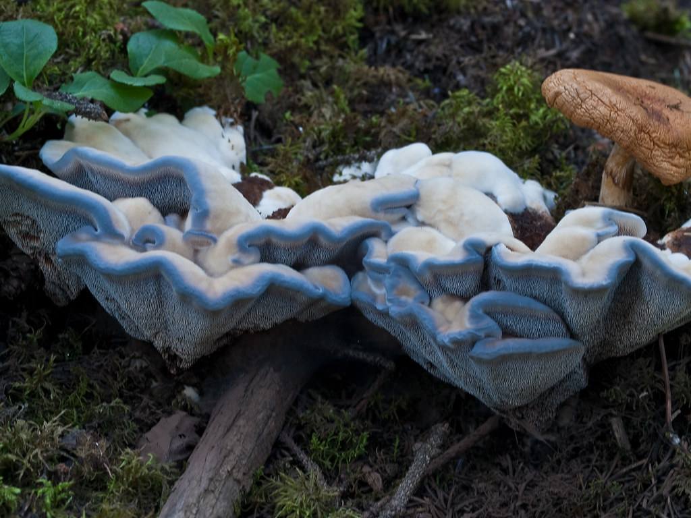

This is Hydnellum Caeruleum, commonly known as the blue-gray hydnellum, blue-green hydnellum, blue spine, blue tooth, or bluish tooth, is an inedible fungus found in North America, Europe, and temperate areas of Asia.
--Source: Wikipedia
You can click around to read more about the blue-tooth fungus!